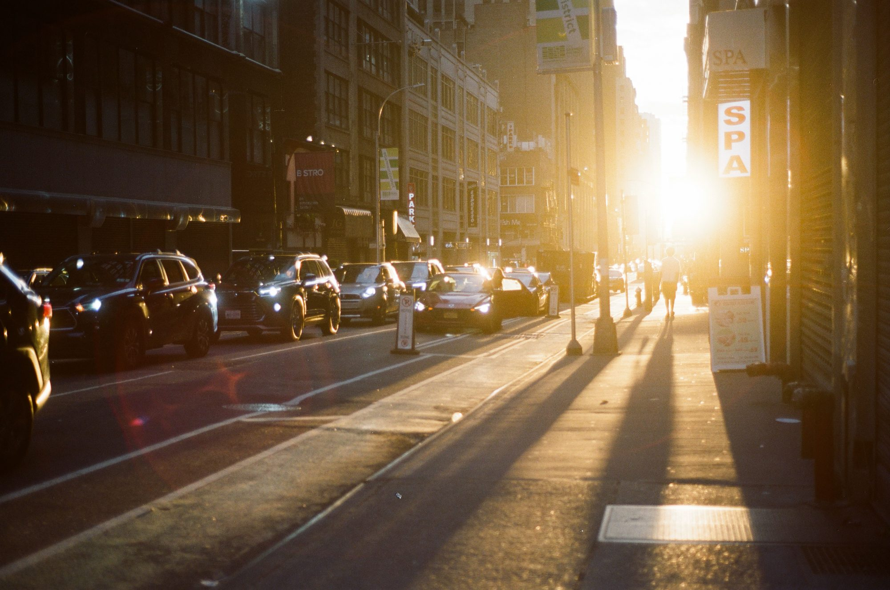
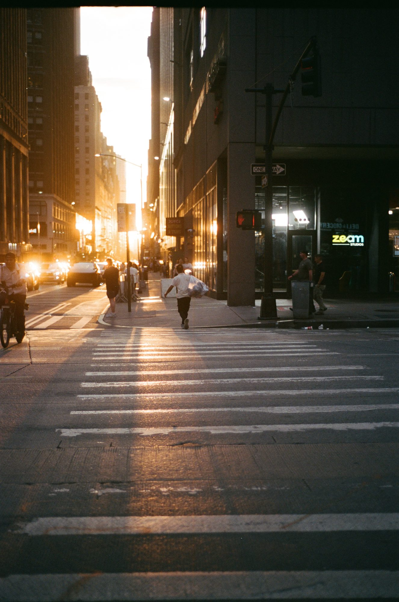
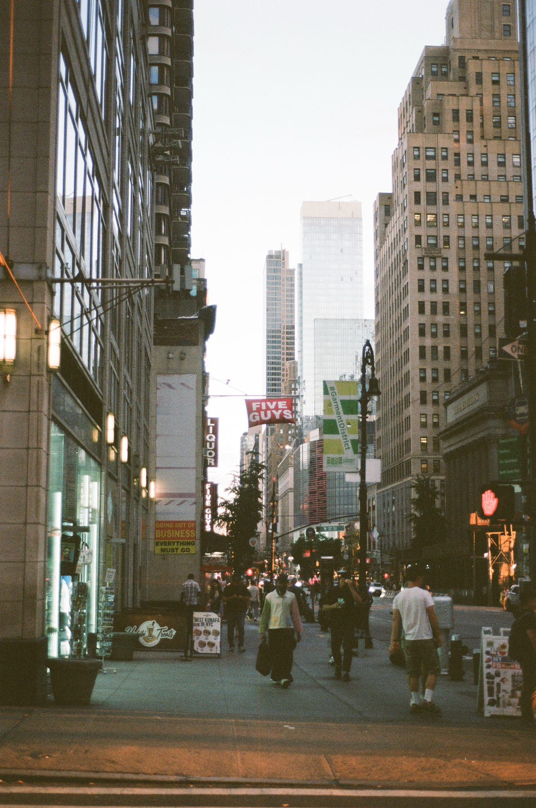
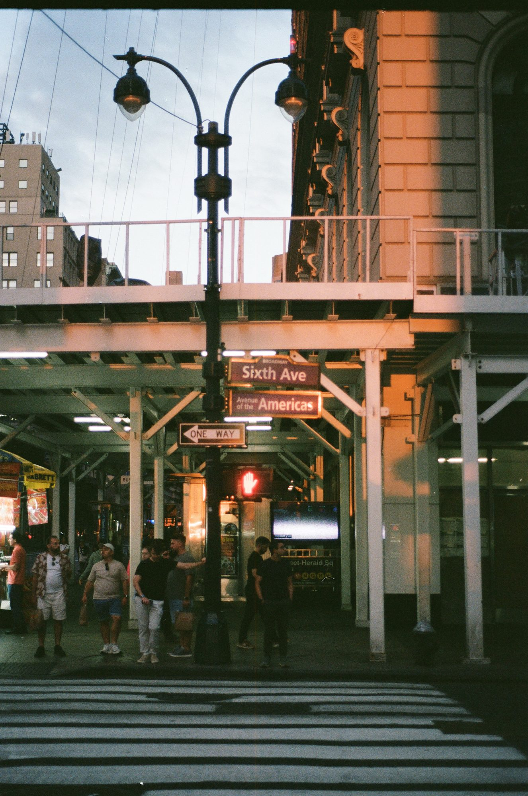
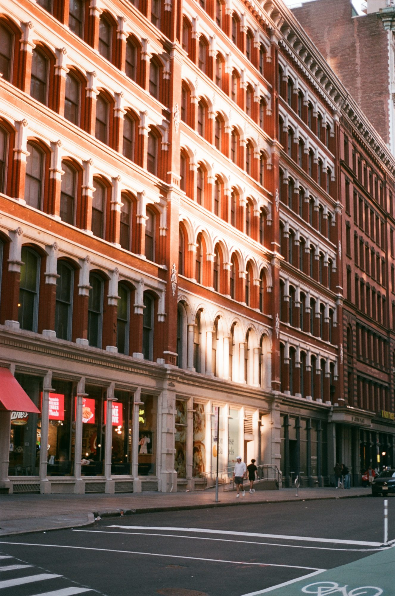
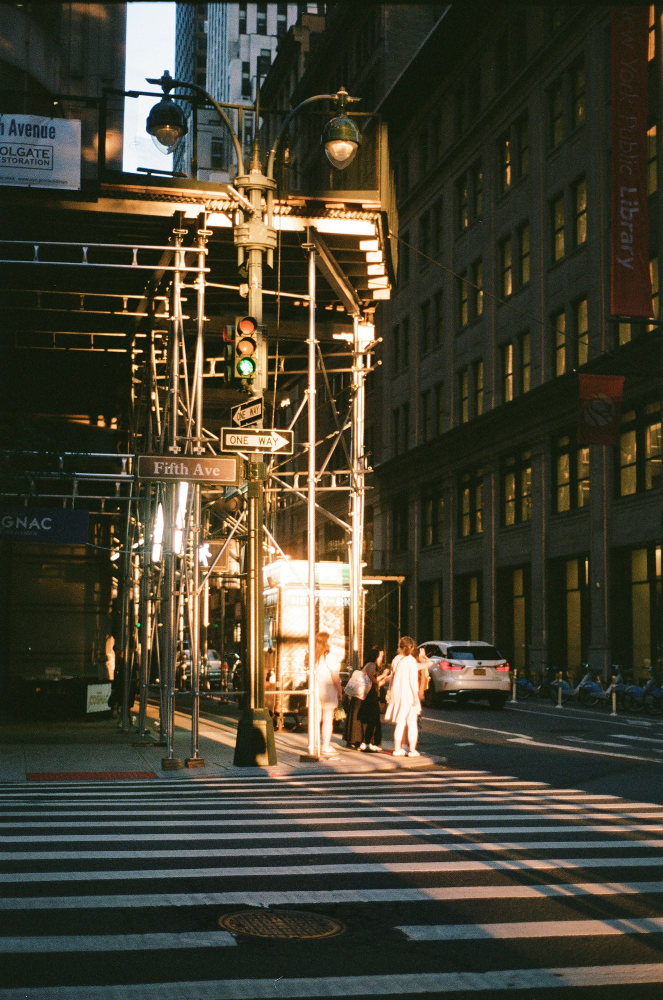
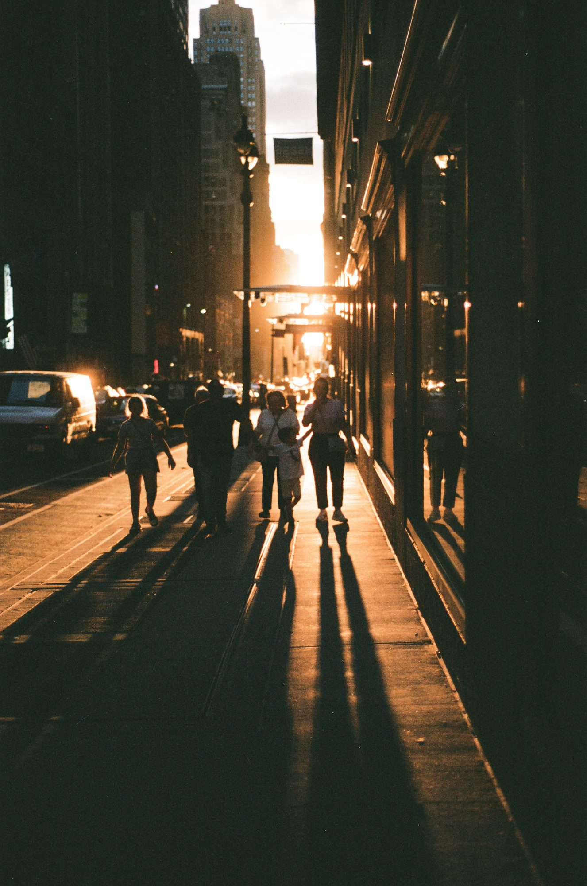
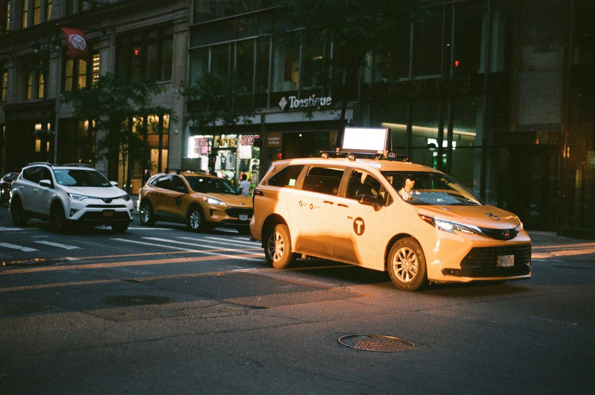
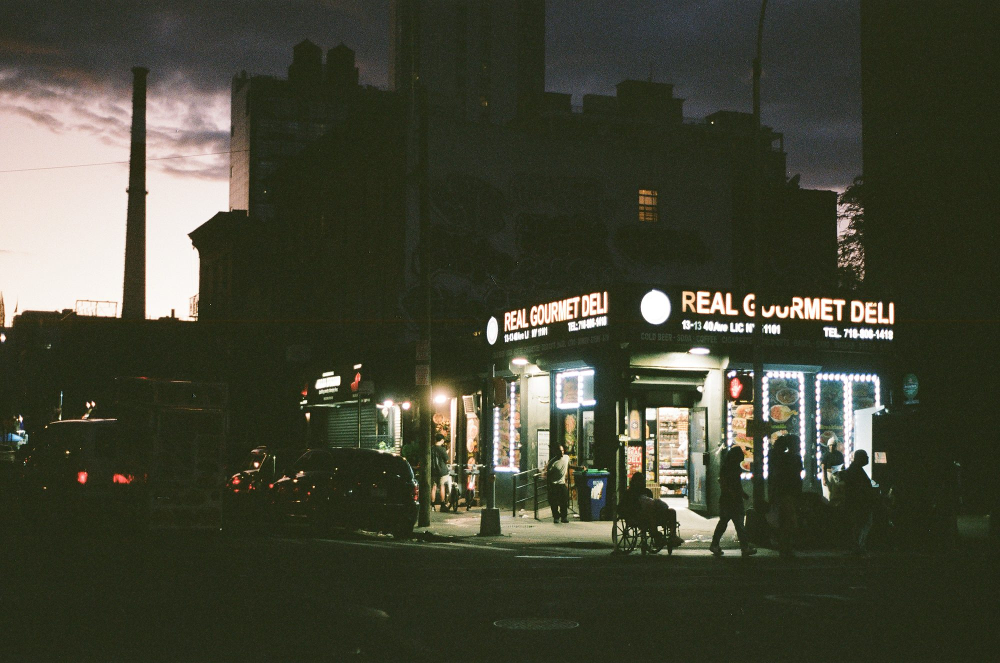

← Film
01 / 07
Last Light, Midtown
Manhattan's street grid turned into a sundial: an evening walk as the sun drops down the cross-streets and the avenues go gold, then dark.
-

01 / 10 -

02 / 10 
03 / 10 -

04 / 10 
05 / 10 -

06 / 10 
07 / 10 -

08 / 10 -

09 / 10 -

10 / 10